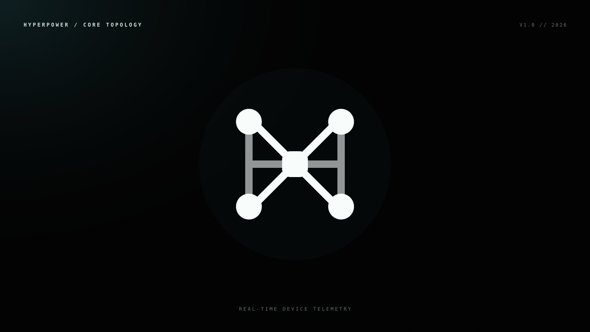
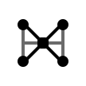
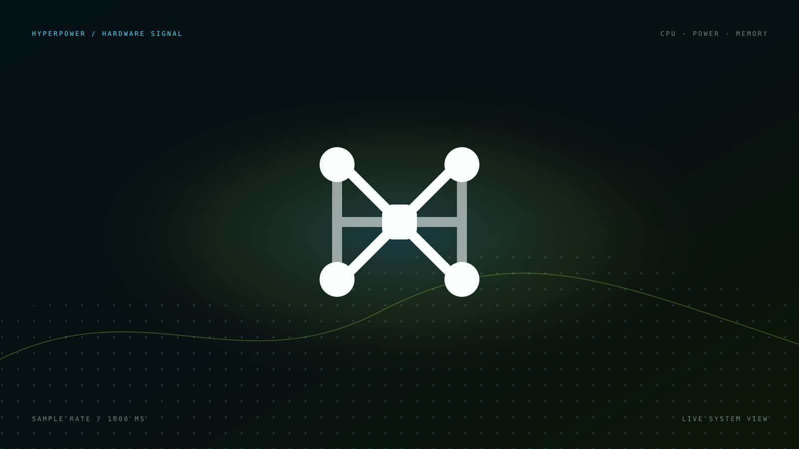
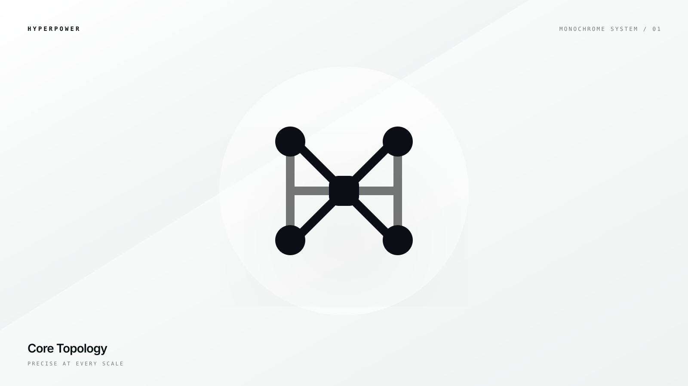
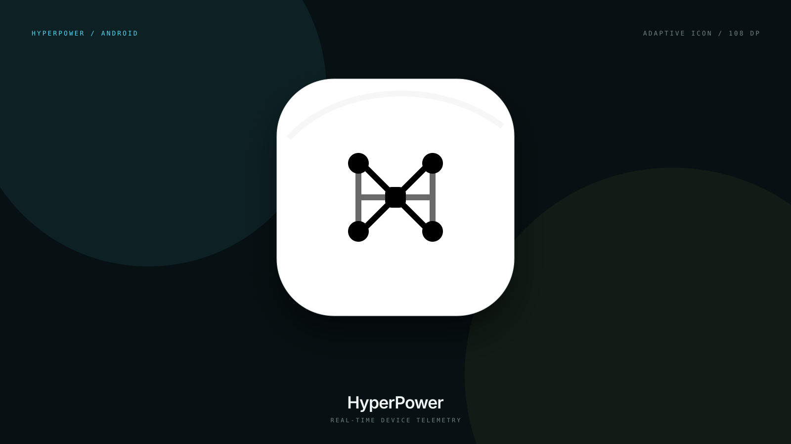

The Void
绝对黑与微弱冷光强化系统工具的深层访问感，并验证白色单色标志。
回到 v1 第 6 号的四节点结构：等权节点、双纵向总线与交叉连接共同形成 H。中央实时采样核心进一步缩小，让负空间更充足；生产图标采用纯白底与纯黑图形。


绝对黑与微弱冷光强化系统工具的深层访问感，并验证白色单色标志。

点阵波形对应 CPU 核心、采样频率与持续遥测，是最贴合硬件语境的展示方向。

高对比冷白空间验证结构秩序、单色主题图标和浅色背景适应性。

把白底黑标放回 Android 自适应图标语境，验证实际产品中的圆角遮罩和视觉留白。